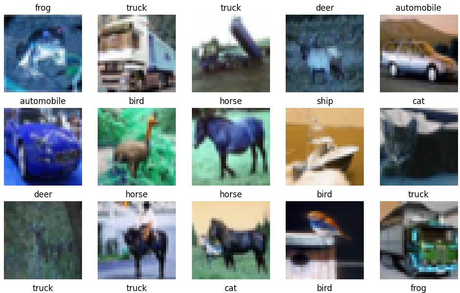
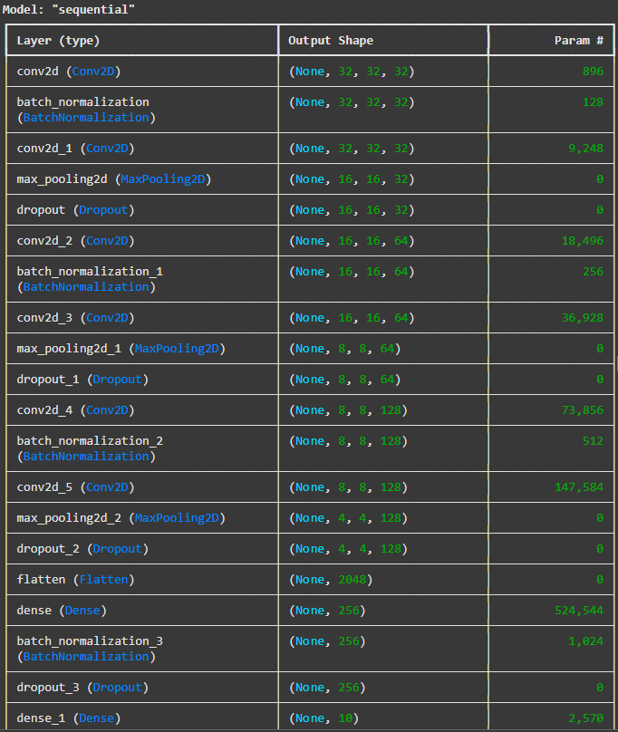
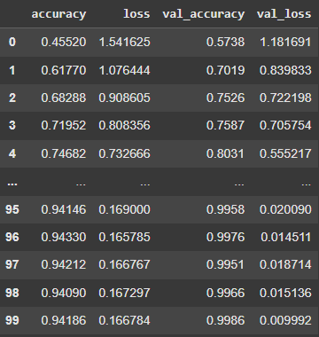
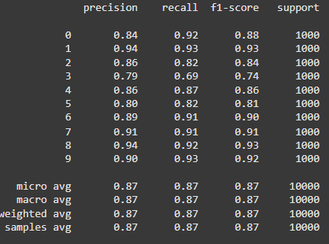

Neural Network Model for Object Recognition
Building a CNN Model for Image Recognition on the CIFAR-10 Dataset

CNN Model for Image Recognition on the CIFAR-10 Dataset
Model Evaluation: CNN project
The CNN project was a valuable learning experience that deepened my understanding of neural networks and their practical applications. Despite initial challenges with limited Python experience, I successfully implemented a model for image classification, covering key stages such as dataset preprocessing, architecture design, parameter tuning, and performance evaluation. The project highlighted the iterative nature of deep learning and the importance of tailoring models to specific tasks. Working independently enhanced my problem-solving skills and confidence, and the outcomes demonstrated the potential of CNNs to address complex problems effectively.Code Summary
- Importing Libraries and Loading Data: The CIFAR-10 dataset is loaded, which contains 60,000 32x32 RGB images across 10 classes (e.g., airplanes, cats, trucks).
- Visualizing Data:  A grid of images from the training dataset is plotted along with their class names. This step provides an intuitive understanding of the dataset.
-
Data Preprocessing:
Images are normalized by scaling pixel values to the range [0, 1] to speed up training and improve convergence. Labels are one-hot encoded using
to_categorical()to match the model's softmax output. - Splitting Validation Data: A subset of training data (10,000 samples) is reserved for validation, helping to monitor performance during training.
-
A deep CNN is constructed with:

- Convolutional layers to extract image features.
- Batch normalization to stabilize learning.
- Pooling layers for dimensionality reduction.
- Dropout layers to prevent overfitting.
- Fully connected Dense layers for classification.
- A final softmax layer to predict probabilities for 10 classes.
-
The model is compiled with:
- Categorical Crossentropy as the loss function (suitable for multiclass classification).
- Adam optimizer for adaptive learning.
- Metrics include accuracy.
- Evaluation: The test dataset is used to evaluate the model's performance in terms of accuracy and loss.
- Metrics Analysis: Training and validation metrics (accuracy and loss) are plotted across epochs to analyze learning behavior.
- Predictions and Reporting: Predictions on the test dataset are made, and a classification report and confusion matrix are generated to analyze precision, recall, and F1 scores.
Outcomes
- Training Metrics: Training accuracy reaches 94%, and validation accuracy is 99.8% in the final epochs, indicating effective learning with minimal overfitting. 
- Test Accuracy: The test accuracy is 87.15%, showing that the model generalizes well to unseen data but still has room for improvement.
-
Confusion Matrix and Classification Report:
-

- The class-wise precision, recall, and F1-scores indicate strong performance in most classes, with F1-scores exceeding 0.9 for many classes.
- Slightly lower performance is observed for challenging classes like "cat" (F1-score: 0.74), suggesting the need for further optimization or augmented training data.
-
Learning Curves:
- Gradual convergence of loss and steady improvement of accuracy over epochs indicate effective training.
- The absence of large gaps between training and validation metrics confirms that overfitting is well-controlled.
Model Limitations
- Resolution Challenges: CIFAR-10 images are small (32x32 pixels), which can limit the model's ability to learn fine-grained details, especially for visually similar classes.
- Ambiguity in Classes: Categories like "cat" and "dog" are prone to confusion because they share overlapping features (e.g., shape, color).
- Data Augmentation: No data augmentation was applied, which could have enhanced the model’s robustness by exposing it to more diverse transformations of the training images.
Future Improvements
-
Data Augmentation:
- Techniques like rotation, flipping, or cropping can help the model generalize better.
-
Regularization:
- Adjust dropout rates to further combat overfitting in deeper layers.
-
Model Architecture:
- Experiment with more advanced architectures like ResNet or DenseNet, which perform better on CIFAR-10.